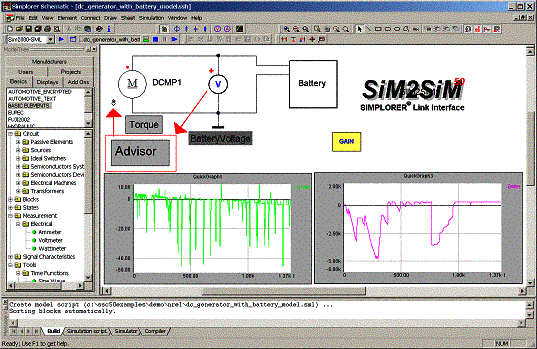

Direct Link with Ansoft’s SIMPLORER for electrical system co-simulation
System and electrical design combined
In the light of the increased electrical content of cars and escalating public interest in alternative propulsion systems, a detailed analysis of the electrical subsystem becomes more and more important. Therefore, Ansoft Corporation and NREL worked together to develop a link between ADVISOR and SIMPLORER – Ansoft’s multi-domain simulation system for automotive, transportation, power electronics and drives.
The link is a co-simulation interface using fast acting direct memory access for data exchange and providing step size coordination algorithms between the two tools. The solution enables engineers to combine SIMPLORER’s multiple simulation and modeling capabilities with ADVISOR.
How to get it?
To operate the link users need an installed and licensed version of Matlab® and Simulink® and an installed version of SIMPLORER with enabled SIM2SIM interface (SIMPLORER to Simulink interface). Users who are interested in testing the link and developing their own models and solutions can obtain a full 30-day evaluation version at Ansoft’s Website under:
http://www.ansoft.com/products/em/simplorer/advisor
Co-Simulation
Both software packages run in parallel on the same computer. The foundation of the link is SIMPLORER’s simulator coupling technology. SIMPLORER already combines several simulator kernels that designers can use simultaneously (circuits, block diagrams, and state machines). Additionally, users can define their own models in programming languages, such as C, C++ or FORTRAN..

SIMPLORER Simulator Coupling Technology
Easy graphical modeling for multi-technology applications
SIMPLORER models are generated in a graphical, schematic-driven environment. The following picture shows a typical setup for an automotive problem. It illustrates a load dump analysis and combines several of SIMPLORER’s modeling capabilities into one model circuits for the electrical systems and state machines and blocks for the control system.

Typical SIMPLORER Setup – Load Dump Analysis
Integration with external simulators
SIMPLORER’s simulator integration interface provides the connection to external simulators. Since ADVISOR is a Simulink®-based application, the already-existing SIM2SIM interface was modified to meet the requirements of ADVISOR simulations. The modified link now allows users to simulate the electrical subsystem with a variable step size in SIMPLORER while the system-level model in ADVISOR is computed with fixed step size. Data is exchanged only at the fixed ADVISOR computation time steps; in between, SIMPLORER operates freely until the next synchronization time. The user can define an arbitrary number of quantities to be transferred to the other simulator. The link and data exchange is fully automatic. Each of the quantities can be visualized in online oscilloscopes.

SIMPLORER–ADVISOR Link System Structure

SIM2SIM Link element in the SIMPLORER Schematic

SIMPLORER–ADVISOR Link DLL in an ADVISOR Vehicle Setup
What to expect?
The included version is a test version for users interested in setting up their own circuit topologies and linking them into a vehicle system modeled in ADVISOR. There is a SIMPLORER demo project that can be opened to see how the link works. Future versions will offer more ease-of-use and predefined component models for automotive electrical applications. Please share your feedback with us; we welcome any input to make the linkage even better. Please send recommendations and comments relating to the Simplorer co-simulation to .
See Simplorer link usage help for instructions on running the demonstration link.
Simplorer Link Usage Help
ADVISOR Documentation Contents
Last Revised: [29-April-2002]: ab